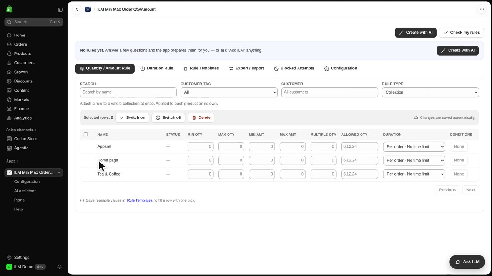
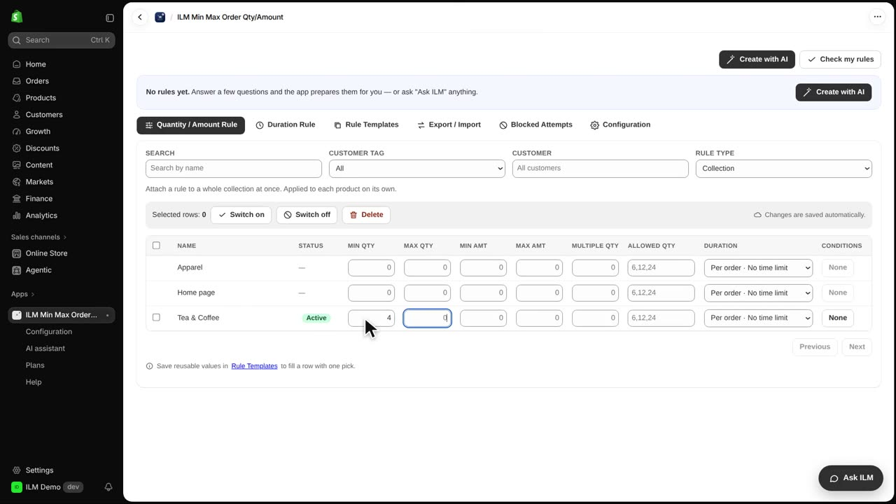
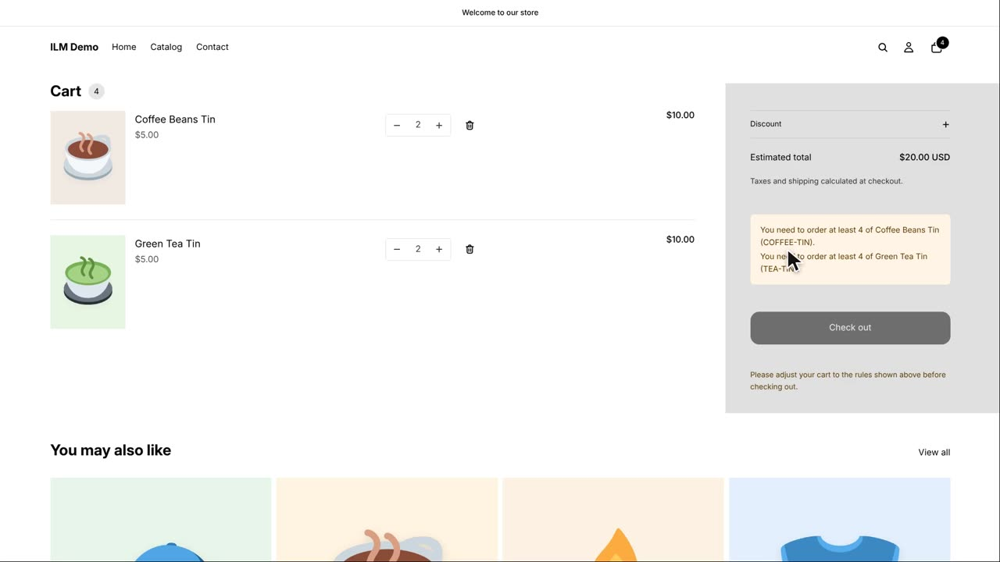
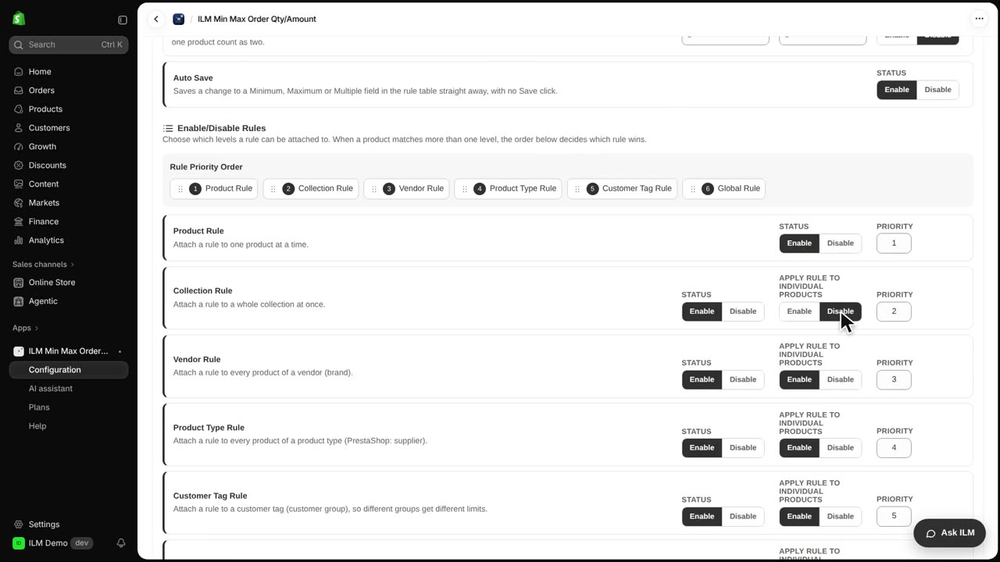
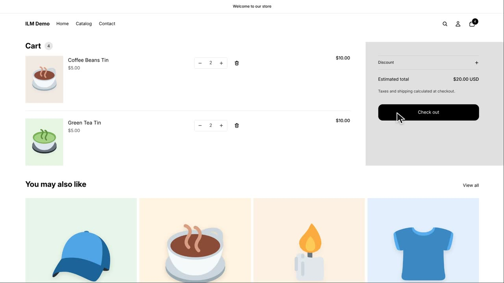

A collection rule lets you set one minimum or maximum for every product inside a Shopify collection, instead of editing each product one by one. This is perfect when you sell related items that shoppers often mix and match, like tea and coffee. In this lesson we use the Tea and Coffee collection, which holds the Green Tea Tin and the Coffee Beans Tin, and we ask for at least four items in total. You will see how the rule behaves when it is applied to each product separately, and how to switch it so the collection is counted together.
In the rule grid, change Rule Type to Collection. Every collection in your store now gets its own row, so you can give each collection its own quantity or amount rule. Here we are working on the Tea and Coffee collection row.

Type four in the Min Qty field for the Tea and Coffee collection. That means a shopper must have at least four items from this collection in the cart before checkout is allowed.

Apply rule to individual products is on by default when you install the app, so the minimum of four applies to each tin on its own. A shopper who adds two Green Tea Tins and two Coffee Beans Tins is refused, because neither tin reaches four by itself. The cart notice explains the rule so the shopper knows what to change.

Open the Configuration tab and scroll to the Collection Rule card. Set Apply rule to individual products to Disable. This tells the app to count all products from the collection together instead of checking each product separately.

Back in the cart, two Green Tea Tins plus two Coffee Beans Tins now make four items from the collection, so the cart is valid and the checkout button works. The same logic applies to maximum rules and to amount rules, and you can combine a collection rule with product or vendor rules if you need tighter control.
